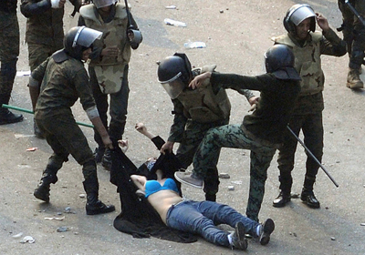
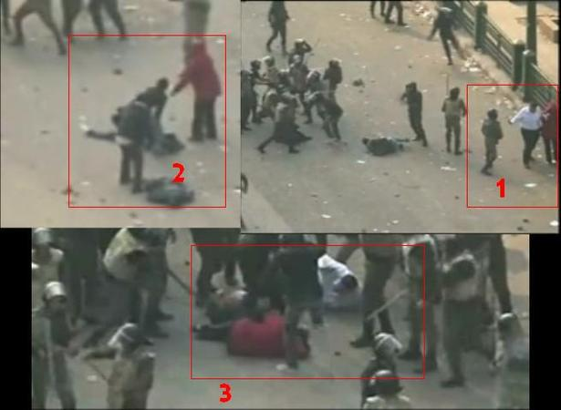

پذيرش > تریبون > مقالات > عکسی که خشونت سرکوب های مصر را یک جا در خود دارد


 عکسی که خشونت سرکوب های مصر را یک جا در خود دارد عکسی که خشونت سرکوب های مصر را یک جا در خود دارد
9 دی 1390 - - نسخه قابل چاپ
ماکس فیشر
ترجمه از زهره اسدپور

تغییر برای برابری - عکس بالا سربازان ارتش مصر را در حال ضرب و شتم زنی در میدان التحریرقاهره، در روز شنبه نشان می هد؛ دومین روز از اعتراضاتی که معترضان در روز جمعه آغاز کردند و در طول شب ادامه دادند. دلیلی ندارد تا باور کنیم چیز خاصی در این زن یا حتی در شیوه ای که این سربازان با او رفتار می کنند وجود داشته باشد. افراد ارتش، که در آغاز به این علت که در جریان انقلاب فوریه در کنار مردم ایستادند، مورد علاقه ی کنشگران مصری بودند، صدها زن و مرد را در 48 ساعت گذشته روانه ی بیمارستان ها کرده اندو حداقل 10 نفر را به قتل رسانده اند و در نهایت امنیت به سوی جمعیت آتش گشوده اند.
اما چیز وحشیانه ی ویژه ای در عکس بالا وجود دارد. تابوی خشونت علیه زنی غیر مسلح به شکل غیر معمولی در میان جوامع عرب قوی است.اما تماشای این که سه سرباز زن بی دفاعی را با باتوم هایشان، با مشت هایشان و سربازی که به شکل غیر معمولی بی رحم است با پوتین بزنند، تکان دهنده ترین بخش نیست. در مصر، برای این مردان، این که عبایه سیاه این زن را از سرش بیرون بکشند و بالاتنه و سینه ی او را در عریان کنند، اتهام شرم آوری عمیقی است. و تناقض منزجر کننده ی استفاده از عبایه که نشانه ای از نجابت و دیانت است، برای پوشاندن صورت و کشاندن او بر روی زمین، گرچه ناخود آگاه است، اما چیزی نیست که از چشم مصریان پنهان بماند. در پایین بخشی از عکس با جزییات بیشتری است. کنشگران ویدیویی از این حادثه گرفته اند. سخت است دیدنش. زن ضربات بسیاری بر سرش وارد می شود، و مردی برسینه اش با شدت می کوبد، سخت است تصور کنی زن چیزی کمتر از بستری شدن می طلبد. گرچه یکی از سربازان با کوششی تا حدودی دلسوزانه او را می پوشاند( البته بعد از این که بر صورت و سینه اش با باتوم کوفته است). زن بی حرکت می شود. سه سرباز از بازوها و پاهایش می گیرند و او را بلند می کنند، و سپس دوربین کات می شود. اعضای مصری خشمگین فیس بوک سه عکس از ویدیوی بالا را ( در صفحه هایشان)پست کرده اند. ( عکس ها ) که با هم گرفته شده اند نشان می دهند دو شاهد ماجرا- یک مرد و یک زن، هر دو با لباس مرتب-ضرب و شتم زن جوان را مشاهده کردند، بعد از این که سربازان زن را از پا در آوردند، به سمت او رفتند، و بعد برای این کارشان مورد ضرب و شتم قرار گرفتند.

ارتش مصر، قدرتمند ترین نهاد کشور و شاید جهان عرب، تغییر جهت شدید و تاریکی پس از کسب قدرت در آغاز سال جاری داده است. گرچه ابتدائا در فوریه با محافظت معترضان از نیروهای امنیتی دولتی حسنی مبارک، حافظ انقلاب بود، به تدریج(اگر چه نه دقیقا) پس از سقوط او( حسنی مبارک) با اظهار این که مستقل از هر دولت دمکراتیک منتخب باقی خواهند ماند و کنترل اوضاع را واگذار خواهند کرد، قدرت را در دست گرفتند. همچنان که اعتراضات علیه ارتش بالا گرفت، ژنرال ها قول اولیه خود را مبنی بر محافظت از شهروندان رها کردند و با خشونت با شهروندان رفتار کردند. اسکاف- شورای عالی نیروهای مسلح، مجموعه ای از رهبران عالی ارتش- به تدریج در هیئت دیکتاتوری جدید ظاهر شد. نیروهای( اسکاف) که هم اکنون آزادانه به شهروندان حمله می کنند، بعید است که جنگشان را علیه فعالیتهای دمکراتیک پایان دهند.
همه ی سرکوب ها بی رحمانه اند. داستان هایی از خشونت علیه زنان، که مرتبا با حدی از خشونت جنسی همراهند، به همان اندازه در سرکوب مصر معمول است که در جاهای دیگر. داستان پشت این عکس، از زن جوان نجیبی که لباسهایش از تنش کنده می شود و مانند حیوان مورد ضرب و شتم قرار می گیرد، از آن رو بسیار گران قدر است که معمول است.
ارسال به
بالاترین
،
توییتر
،
فریندفید
،
فیسبوک
در همين بخش :
 دهمین دورۀ مراسم تندیس صدیقه دولت آبادی ۱۳۹۲ دهمین دورۀ مراسم تندیس صدیقه دولت آبادی ۱۳۹۲
کارت پستالهایی به بهانهی هشت مارس و به یاد همهی مبارزین راه برابری
بیانیه بیش از 350 تن از مدافعان حقوق زنان به مناسبت روز جهانی زن؛ زنان هر روز فرودستتر میشوند
لباسی که برای تن ما دوخته اند! /اعظم بهرامی
چالشها و چشمانداز فعالیت مدنی زنان
ديگر بخش ها :
طرح یک میلیون امضا
|
مقالات
|
سایت نوشته ها
|
اخبار
|
گزارش كمپين
|
گفت و گو
|
علیه سکوت
|
كوچه به كوچه
|
نامه های شما
|
گزارش ویژه
|
گفتگو با اعضا
|
ویژه سالگرد کمپین
|
تصویر برابری
|
دل آرام علی
|
تریبون
|
مقالات
|
تاریخ شفاهی
|
خارج از چارچوب
|
کتابخانه
|
درباره کمپین
|
کمپین در شهرها
|
کمپین در بند
|
صدای تغییر
|
ویژه 22 خرداد
|
لایحه حمایت از خانواده
|
گالری
|
عشا مومنی
|
امیر یعقوبعلی
|
خدیجه مقدم
|
راحله عسگری زاده و نسیم خسروی
|
پروین اردلان،جلوه جواهری، مریم حسین خواه، ناهید کشاورز
|
زینب پیغمبرزاده
|
سعیده امین، سارا ایمانیان، محبوبه حسین زاده، ناهید کشاورز و همایون نامی
|
احترام شادفر
|
نسیم سرابندی زاده،فاطمه دهدشتی
|
وبلاگ مهمان
|
پرونده خرم آباد
|
دستگیری ها
|
مریم مالک
|
پرستو اللهیاری
|
مهرنوش اعتمادی
|
سمیه رشیدی
|
Other Languages
|
همراهان
|
«فراخوان کمپین ده روز با بهاره هدایت»
| English
|